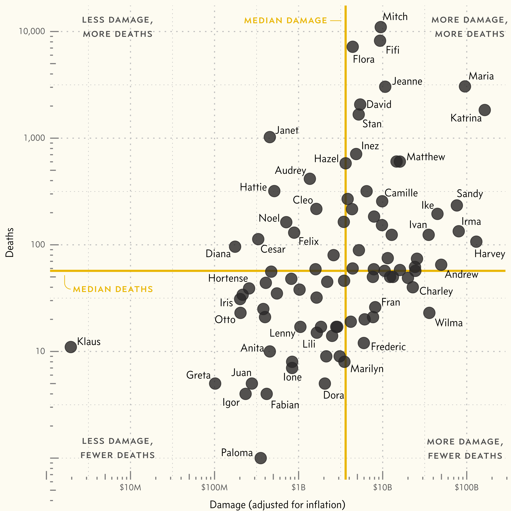

In 1954, three devastating hurricanes struck the United States. Hurricane names typically repeat, but the following year those hurricane names—Carol, Edna, and Hazel—were retired, not to be used again out of respect for the victims. The practice of naming hurricanes after people had only been formally adopted in 1950. Prior to that, hurricanes were often named after places or the name of the Saint’s Day on which the hurricane occurred. Beginning in 1944, meteorologists from the US armed forces began informally naming hurricanes after their wives and girlfriends, finding that the colloquial names improved recall and helped avoid confusion between multiple storms. In 1945 they publicly adopted a list of women’s names to be used for naming Pacific hurricanes, and requested that the US Weather Bureau do the same for Atlantic storms. But the Weather Bureau resisted, insisting that to be taken seriously, they should refer to hurricanes using technical jargon rather than names. But 1950 saw three Atlantic tropical storms simultaneously, which led to confusion and spurred Grady Norton (then chief forecaster at what would become the National Hurricane Center) to begin using names publicly. After that, the cat was out of the bag, and by 1952 the Weather Bureau officially adopted a list of women’s names for Atlantic hurricanes that would be reused each year. After the practice of retiring hurricanes began in 1955, about one name was retired each year and replaced with a new one, though some years saw no retirements, and some saw several.
At the time, there was some grumbling about the use of women’s names (both from those that found it offensive to women and those that thought it made hurricanes seem frivolous), but the new practice was generally well received from the public. In 1969 the National Organization of Women called on the National Hurricane Center to discontinue using solely women’s names for hurricanes, but the motion went largely ignored. It wasn’t until 1978 that Secretary of Commerce Juanita Kreps (the first female Secretary of Commerce) ordered NOAA to cease using exclusively female names for hurricanes. Following the directive, NOAA convened a meeting and amended the hurricane name lists to include names from both sexes.
In the years from 1950 to 1978, hurricane naming evolved significantly. There were many inconsistencies early on, such as names being removed from circulation, but not “retired” due to severity, merely removed with no justification given. Eventually multiple lists were introduced, so that names would repeat every two, or four, or five years, until 1978, when our modern system was introduced. Since 1978, we have used six lists of hurricane names, based on names of both sexes, and including names of French and Spanish origin, since these hurricanes affect regions where these languages are native. The name lists are cycled, so that names repeat every six years, except when a name is retired due to severe damage or a large number of casualties.

These retired hurricanes represent the most severe storms the Atlantic has experienced over the last 70 years. The most costly storm to date was hurricane Katrina (2005), which caused more than $160 billion dollars in damage (adjusted for inflation), mostly due to flooding. Hurricane Mitch (1998) was by far the most deadly, with 11,000 casualties. Below you can explore and compare the history and resulting damage of all retired hurricanes.
The characteristics of a retired hurricane are varied. Some are retired for the huge damage they cause, others for their number of casualties, and those rare few that are pure death and destruction, causing both massive damage and many deaths.
There are many factors that predict these types of hurricanes. An obvious one is wind speed. Indeed many retired hurricanes reach high wind speeds, and the average wind speed of retired hurricanes is greater than normal hurricanes. However, there are several examples of retired hurricanes that are only category 1 or 2, or never even make it beyond the designation of Tropical Storm.
Another major factor predicting hurricane damage and death is the location of landfall. Several of the most damaging hurricanes—such as Katrina, Harvey, and Sandy—hit major metro areas (New Orleans, Houston, New York City). And several of the most deadly hurricanes—Mitch, Maria, Fifi—hit areas with less developed infrastructure for weathering and recovering from a major hurricane. Of course, the handling of hurricane recovery has a major impact on how many deaths result. Hurricane Katrina and Maria are notable for their botched responses from the Bush and Trump administrations respectively.
Although deaths have decreased in recent years due to better forecasts and early warning systems, the amount of damage has increased primarily due to rising coastal populations and infrastructure cost. According to NOAA, climate change is predicted to increase the overall global intensity of hurricanes, with more category 4 and 5 hurricanes as well as more rapid hurricane strengthening. The amount of coastal flooding from hurricanes is also predicted to increase, both due to more rainfall and sea level rise. Of course, hurricane seasons are influenced by many factors, so year-by-year patterns may seem erratic, but all of this adds up to a future with more intense, and likely more retired hurricanes.
Information on retired hurricanes, such as deaths, damage, wind speed, etc. was recorded by hand and collected from Wikipedia and news reports. All data on damage cost was corrected for inflation. No data was found on damage for hurricane Anita, so an estimate was made based on a similar storm (hurricane Janet). Data on hurricane severity in each region was recorded by hand using NOAA’s hurricane database. In several cases, these severity designations involved subjective judgements, such as whether a hurricane made landfall when it was off the coast of an area, or what category a hurricane was when its wind speed changed rapidly upon landfall. Geographic data on hurricane tracks was gathered from the IBTRACS dataset.